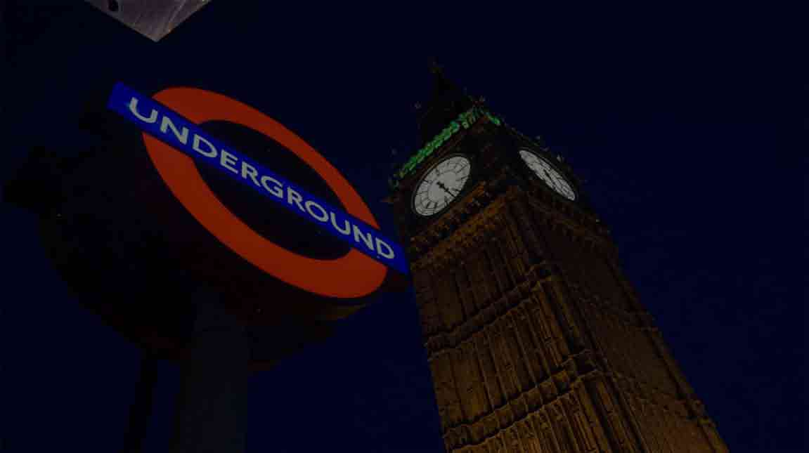

London 101
Londres es la capital y mayor ciudad de Inglaterra y del Reino Unido. Situada a orillas del río Támesis, Londres es un importante asentamiento humano desde que fue fundada por los romanos con el nombre de Londinium hace casi dos milenios. Es una ciudad global, uno de los centros neurálgicos en el ámbito de las artes, el comercio, la educación, el entretenimiento, la moda, las finanzas, los medios de comunicación, la investigación, el turismo o el transporte. Londres es también una capital cultural mundial, la ciudad más visitada considerando el número de visitas internacionales y tiene el mayor sistema aeroportuario del mundo según el tráfico de pasajeros.
Clima
Londres tiene un clima oceánico templado, similar al del resto del sur de Gran Bretaña. A pesar de su reputación de ciudad lluviosa. Los inviernos son fríos, con unas dos heladas por semana en los suburbios entre los meses de noviembre y marzo. La nieve cae raramente, unas cuatro o cinco veces al año entre diciembre y febrero, mientras que en los meses de marzo y abril puede nevar una vez cada dos o tres años. Las temperaturas invernales oscilan entre los −4 °C y los 14 °C. La temperatura máxima es de 38.2°C
Los veranos son generalmente templados, aunque ocasionalmente se dan episodios de días muy calurosos. En el centro de la ciudad las temperaturas suelen ser unos 5 °C más altas que en el extrarradio debido al efecto de isla de calor que crea el área urbana. La temperatura media de los veranos londinenses es de 18.5 °C, aunque alrededor de siete días al año suelen superar los 30 °C y dos días los 32 °C.
Acento
El acento londinense adquirió hace mucho tiempo el nombre de cockney, una forma de hablar similar a la del resto del sudeste de Inglaterra. Sin embargo, el acento del londinense del siglo XXI es muy diverso y el que se está haciendo más común entre los menores de treinta años es cierta fusión de cockney, la pronunciación recibida, además de toda una serie de acentos étnicos, particularmente caribeños, que dan forma al habla bautizada como inglés multicultural de Londres.